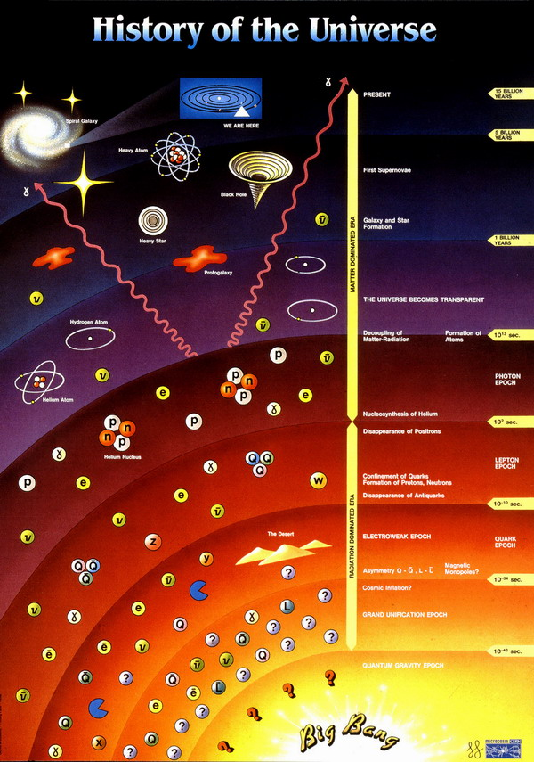

| МЫ НИЧЕГО НЕ ЗНАЕМ О ВСЕЛЕННОЙ
!!! http://journeypony.livejournal.com/35353.html?view=774425#t774425 |
|  |
| К такому потрясающему выводу пришли ученые, которые
занимаются изучением фундаментальных законов развития вселенной и развитием фундаментальных
отраслей науки, таких как космогония, астрофизика...
На данный момент существует 2 теории развития вселенной после большого взрыва (Big Bang). Одним из создателей теории Большого взрыва был бельгийский священник Жорж Леметр, впоследствии президент Папской академии наук. Отец Леметр сформулировал свою теорию после посещения в конце 1920-х годов лаборатории Маунт-Вилсон в Калифорнии, где астроном Эдвин Хаббл (его именем назван современный телескоп) обнаружил, что галактики стремительно, как осколки гранаты, удаляются друг от друга. То есть раньше галактики были стянуты в одно место, а потом Вселенная по непонятной причине стала расширяться. "Становление мира, - писал Леметр, - можно сравнить с отгорающим залпом фейерверка. Мы стоим на остывшей лаве и смотрим, как медленно гаснут солнца". Но кто вынул пробку и выпустил галактического джинна из бутылки? Первая теория предполагает, что Вселенная расширяется постоянно, а вещество в ней образуется с постоянной скоростью, по мере ее расширения. Другая, гласит, что вселенная пульсирующая и со временем начнется ее сжатие под действием гравитационных сил тех масс вещества, которые в ней существуют. На данный момент превалирует теория пульсирующей вселенной. Но ни одна из них не способна ответить на очень важные вопросы, без которых не возможно представить себе более или менее стройную картину. Например, если вещество образуется во вселенной пропорционально ее расширению, то в самых удаленных ее участках плотность вещества должна быть примерно такой же, как и в точках ближайших к центру взрыва. Но данные говорят, что на дальних рубежах плотность выше. Недавно же была обнаружена область вселенной в которой нет ничего. То есть вообще ничего. Ни звезд, ни галактик, ни пылевых облаков. Пустота. Причем размеры ее впечатляют. Более миллиарда световых лет в поперечнике. Даже сложно представить себе сколько это. Это так же говорит за неравномерность распространения вещества во вселенной. С другой стороны теория пульсирующей вселенной никак не может объяснить установленного факта, что огромное число галактик разлетается от центра взрыва с возрастающим ускорением, в то время как для того чтобы вселенная пульсировала ускорение должно быть отрицательным, то есть расширение должно постепенно замедляться. Факты же говорят, что оно возрастает, что противоречит понятию просто взрыва! Значит есть некая сила которая их расталкивает от центра, причем она присутствует постоянно подобно включенному двигателю у ракеты. К тому же на окраинах вселенной это ускорение больше!! Первая аналогия приходящая в голову, что видимая вселенная подобна гигантскому шару который находится внутри непонятно чего, что растягивает его размер с внешней стороны. То есть подобие воздушного шарика в неком объеме из которого выкачивают воздух и шарик раздувается так как давление вокруг него падает. Но тогда что это за пространство вне нашего? На этот вопрос нет ответа. Мы не знаем! Если не вдаваться в тонкости исследований, ученые приходят к следующим выводам: Вся наблюдаемая нами вселенная со всеми галактиками, туманностями, звездами, планетами, черными дырами, квазарами, туманностями, пылевыми облаками и межзвездным пространством это всего 5% от всей массы!!! Остальная масса по мнению ученых сосредоточена в чем-то, что ученые окрестили "Темная материя". Мы знаем что-то, но не все лишь природе 5% вещества. 25% вещества о природе которого мы не знаем ничего это "Темная материя" и 70% вещества сосредоточено в таинственной "Темной энергии" Забавные выводы, не правда ли? ))) Мы не знаем ничего пока о природе 95% того из чего состоит наш мир в котором мы живем!!! Всемирно знаменитый физик Стивен Хокинг, который занимает в Кембридже ту же кафедру, что занимал Ньютон, сформулировал 4 принципиальных вопроса, на которые современная космология не знает ответа. (данные вопросы были актуальны до факта обнаружения глобальных неоднородностей и факта наличия ускорения разлета галактик) 1. Почему ранняя Вселенная была такой горячей? 2. Почему Вселенная однородна и одинакова в больших масштабах, если информация между частями Вселенной не передается? 3. Почему Вселенная начала расширяться с критической скоростью, только благодаря которой не произошло ее повторное сжатие, и почему она до сих пор продолжает расширяться примерно с той же скоростью? 4. Что было причиной флуктуаций в плотности вещества, которые привели к образованию звезд и галактик? То есть учитывая последние открытия, этих вопросов станет больше. Проблема возникновения Вселенной занимала людей еще до появления современной науки. В основе интереса - желание дойти до первопричины всего сущего. И вывести из этой первопричины все наблюдаемые нами следствия. В Библии, кстати, указана даже точная дата сотворения мира - 5 тысяч лет до нашей эры. Историческое обоснование этой даты может быть в том, что она примерно соответствует последнему ледниковому периоду - 10 тысяч лет до нашей эры. В V веке н.э. автор "Христианской науки" Блаженный Августин указывал, что до возникновения Вселенной понятие времени лишено смысла, что удивительным образом совпадает с представлениями современной науки. Августин писал, что Бог создал и Вселенную, и время, поэтому до рождения Вселенной времени не было. Иммануил Кант в "Критике чистого разума" составил перечень антимоний, главной из которых было противоречие между началом Вселенной и бесконечным периодом времени, который должен предшествовать этому началу. Почему тогда Вселенная возникла в какой-то определенный момент времени? Проще подходили к проблеме древние греки: великие мудрецы Платон и Аристотель считали, что мир неизменен и существует вечно, но лишь иногда в нем случаются катастрофы, которые отбрасывают человечество назад. Надо сказать сразу, что наука уже сто лет категорически отрицает возможность существования стационарной и неподвижной Вселенной просто по той причине, что она была бы нестабильной. Это вроде велосипеда, который не может стоять на месте. Директор Института космических исследований, член-корреспондент РАН Лев Зеленый: "Теория катастроф едина и для процессов во Вселенной, и для обвала финансовых рынков. Социальные конфликты, эскалация всякого рода напряжений имеют характер неустойчивых процессов с обратной связью, в результате чего происходит качественный скачок, который можно назвать в одном случае взрывом, в другом - революцией или бунтом" "Помню, в давние годы мы забавы ради написали работу "Фрактальная теория распада Римской империи", где с помощью моделей, разработанных для изучения космических объектов, исследовали исторические процессы. Получилось, что Римская империя должна распасться на 15 частей, как и вышло по истории. Думаю, фрактальные теории, было бы желание, можно применить к распаду Югославии и СССР." " Космическое пространство и звезды состоят из плазмы, это четвертое состояние вещества. Но по хронологии Вселенной это самое первое состояние вещества. 150 тысяч лет после рождения Вселенной в ней были только свет и плазма. Иногда мне кажется, что плазма живая. Вроде мыслящего океана в "Солярисе". У человека есть всего пять органов чувств. А в плазме десятки способов передать возмущение из одной точки в другую, каждую секунду проходят миллионы информационных сообщений. Плазма мобильнее живого существа, ее трудно удержать, она выскакивает из любой магнитной ловушки. На Земле мы видим плазму уже в умирающем состоянии во время полярных сияний." Директор Астрономического института имени Штернберга, член-корреспондент РАН Анатолий Черепащук: "Самое сильное чувство, которое приходит, когда занимаешься астрономией, - ощущение бренности земной жизни. Земля - ничтожнейшая песчинка во Вселенной - меньше атома в наших масштабах. И отсюда идет понимание того, что надо снисходительно относиться к тем суетным заботам, которые захватывают наше земное воображение. Жизнь на Земле безмерно хрупкая, и надо наслаждаться ею, любить ее, получать удовольствие от каждого прожитого дня. Таким образом, занятия астрономией делают человека добрее и терпимее. Астроном чем-то похож на жителя Соломоновых островов, который понимает, что каждый день может прийти цунами и разрушить всю налаженную жизнь. На Соломоновых островах, думаю, люди похожи на астрономов." Каков итог? На мой взгляд самым главным является осознание учеными того, что мир вовсе не такой как мы себе долго думали. То есть по сравнению с тем что мы НЕ знаем о нашей вселенной, те знания которые мы успели получить, настолько малы, что как говорят ученые ими можно пренебречь ))) Вот и получается, что мы ничего не знаем о нашем мире, в котором живем если рассматривать его только с научной точки зрения ))) |